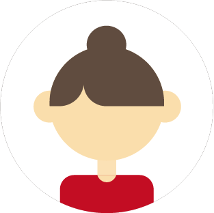

Table Friends とは
Table Friendsは、"使いにくいのに、なぜか好きになる"
ちょっと不思議なカトラリーを楽しむための架空ブランドです。
Webという現実的な空間に、非現実的なカトラリーキャラクターを配置し、
"見て楽しむ"新しいカトラリー体験をつくりました。
こんな人におすすめ

- 可愛い雑貨やインテリアが好きな人
- ユニークなデザインに惹かれる人
- "使えないけど欲しいもの"に魅力を感じる人
- 3D表現・Web演出に興味がある人
Table Friends の魅力

見ているだけで楽しい「クセのあるかわいさ」
使えないのに、なぜか愛着が湧くデザインがポイント。
キャラクター性の強さ
ひとつひとつが個性を持っていて、思わず集めたくなる。
"使えなさ"を価値に変える発想
実用性を手放すことで、デザインの自由さとユニークさが際立つ。

お客様の声
とても使いやすくて助かっています！
（東京都・A様）
サポートが丁寧で安心できました。
（大阪府・B様）
また利用したいと思います！
（福岡県・C様）